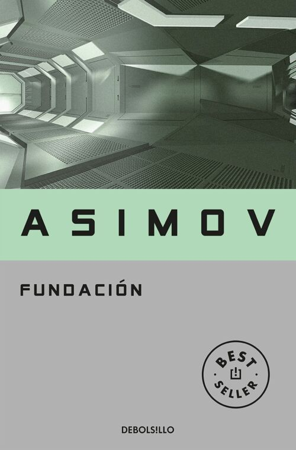
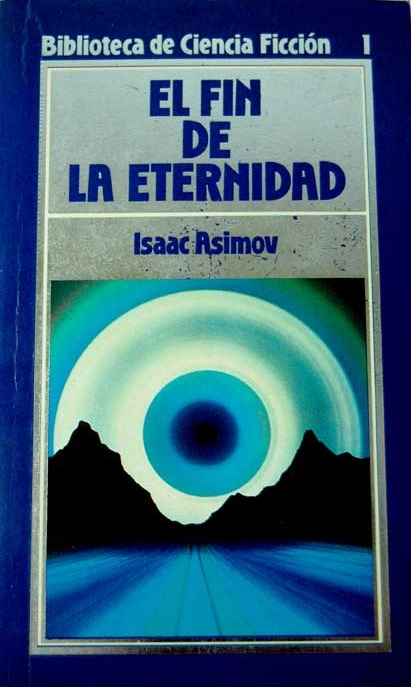

| PORTADA |
TITULO |
AUTOR |
SINOPSIS |
ENLACE DE DESCARGA |
 |
Dune |
Frank Herbert |
En el planeta desértico de Arrakis, la especia llamada melange es la sustancia más valiosa del universo. "Dune" sigue la historia de Paul Atreides mientras se convierte en líder de una revuelta contra el opresivo gobierno imperial. Esta épica mezcla de política, religión y ecología ha sido aclamada como una de las obras maestras de la ciencia ficción. |
LEER |
 |
1984 |
George Orwell |
En un futuro distópico, Orwell presenta un mundo totalitario en el que el Gran Hermano todo lo vigila. El protagonista, Winston Smith, lucha por mantener su individualidad y libertad en medio de la represión y la manipulación del Estado. "1984" es una obra impactante que ha influido en la cultura y la política desde su publicación. |
LEER |
 |
Neuromancer |
William Gibson |
Considerada una de las obras fundacionales del subgénero de la ciberpunk, "Neuromancer" sigue a Case, un hacker condenado a no poder conectarse a la matriz, un ciberespacio global. Sin embargo, una misteriosa oferta le brinda la oportunidad de recuperar su habilidad, pero también lo envuelve en una peligrosa conspiración corporativa. |
LEER |
|  |
Fundación |
Isaac Asimov |
En un futuro lejano, el psicohistoriador Hari Seldon predice la caída del Imperio Galáctico y establece la Fundación para preservar el conocimiento humano. A través de varias generaciones, la serie "Fundación" explora la lucha por el control del destino de la galaxia y las fuerzas que impulsan su desarrollo. |
LEER |
|  |
El fin de la eternidad |
Isaac Asimov |
En esta novela, Asimov presenta la Eternidad, una organización que controla los viajes en el tiempo para corregir los errores en la historia humana. Andrew Harlan, un Eternista, se enfrenta a dilemas éticos y paradojas temporales mientras se enamora de una mujer que no debería existir. "El fin de la eternidad" es un clásico de la ciencia ficción con reflexiones filosóficas sobre el tiempo y el destino. |
LEER |